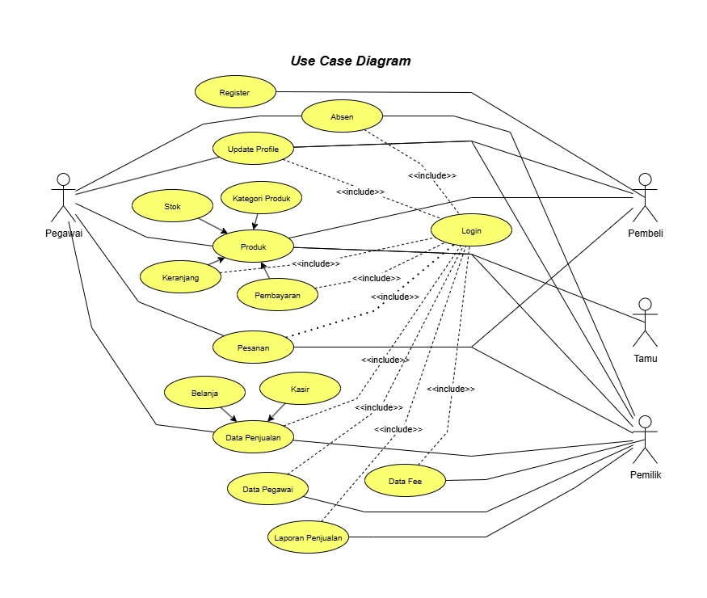
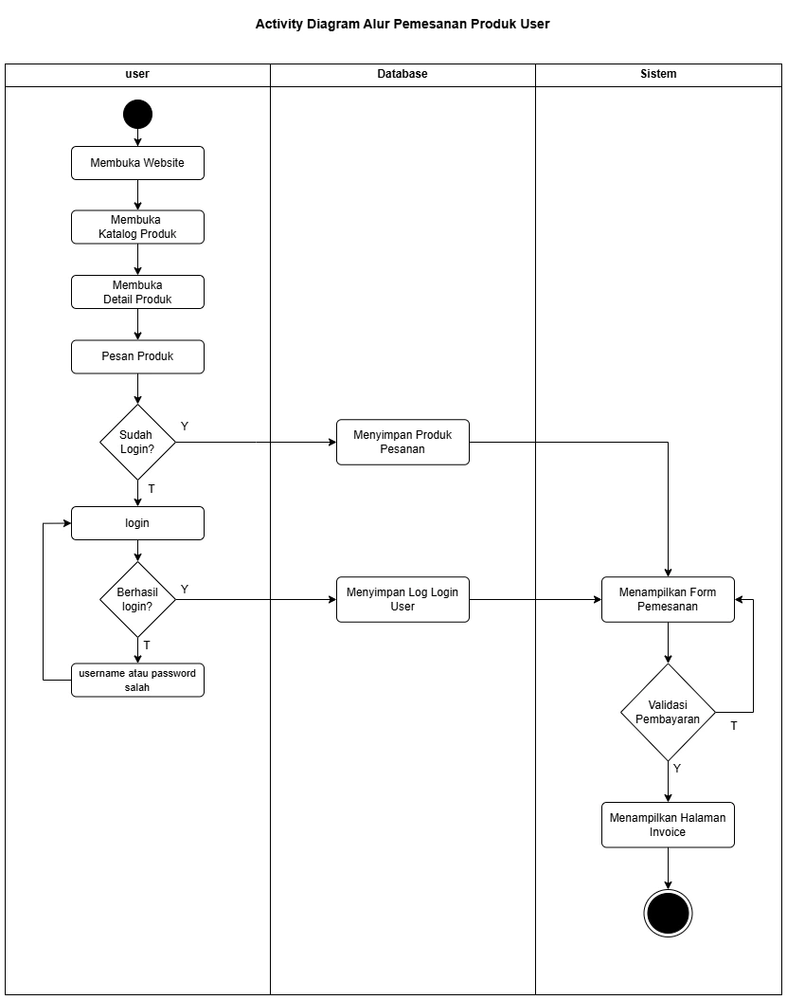
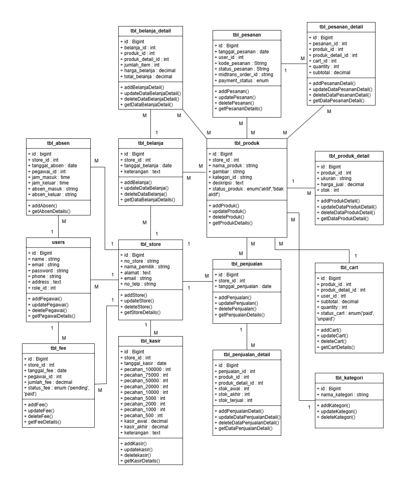
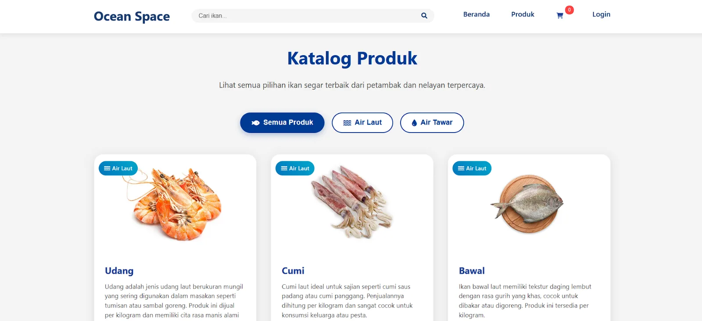
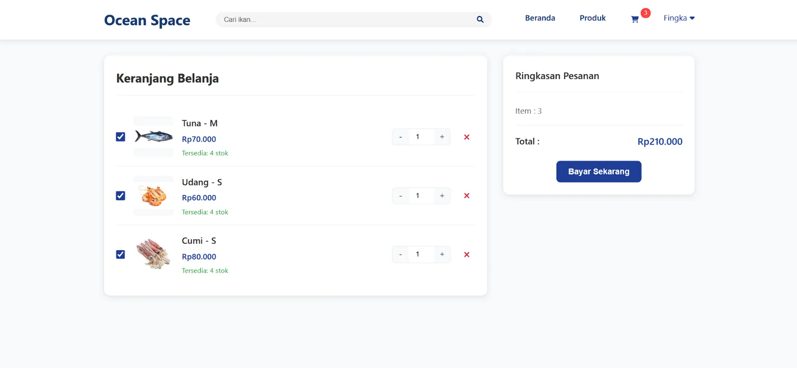
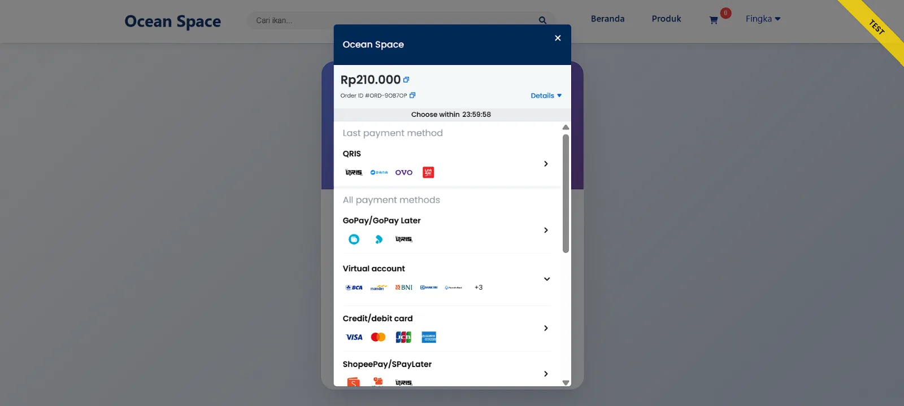
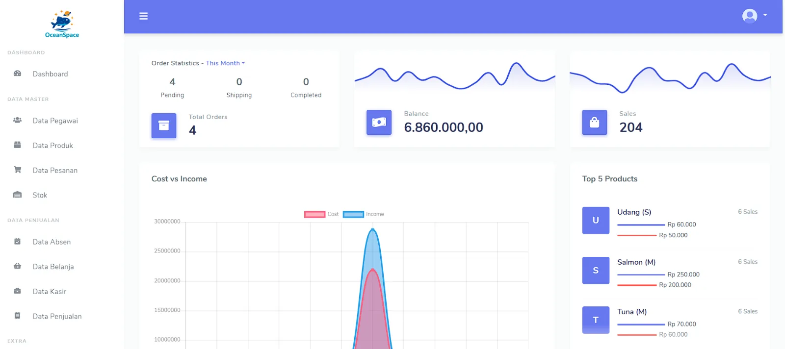

Ocean Space
Toko online untuk usaha ikan hias, dengan katalog, keranjang, checkout, pembayaran Midtrans, dan sisi admin untuk produk, pesanan, pembelian stok, dan kasir.
01Konteks & Masalah
Usaha ikan yang berjualan online butuh toko tempat pelanggan bisa melihat produk, memesan, dan membayar secara digital, sementara pemilik mengelola produk, pesanan masuk, pembelian stok, dan penjualan di toko dalam satu sistem.
02Ruang Lingkup
- Pelanggan: katalog, detail produk, keranjang, beli langsung, checkout, pembayaran Midtrans, riwayat pesanan, unduh invoice.
- Admin: kelola produk, update status pesanan, pembelian stok, kasir (penjualan di toko), absensi, dan biaya.
03Desain



04Alur Pembayaran
Checkout membuat pesanan, pelanggan membayar lewat Midtrans, lalu Midtrans mengirim notifikasi yang meng-update pesanan:
| Status Midtrans | Status pembayaran | Status pesanan |
|---|---|---|
| settlement | paid | pending (siap diproses) |
| cancel / expire / deny | failed | cancelled |
05Refleksi
Setelah bekerja di sistem pembayaran, saya akan merancang penanganan notifikasi dengan lebih hati-hati:
- Memverifikasi signature notifikasi sebelum dipercaya.
- Membuat update idempotent, sehingga notifikasi yang terkirim ulang tidak mengubah pesanan dua kali.
- Mengecek status transaksi ke provider bila notifikasi tidak datang.
Prinsip yang sama saya terapkan di studi kasus payment integration.
06Tampilan




